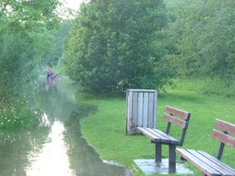
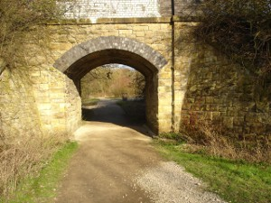
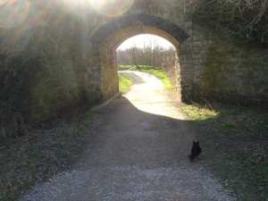
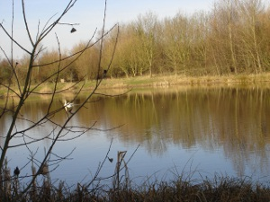

Home
About the Friends
History of the site
Wildlife at Straws Bridge
Latest
Wildlife Sightings
News and Events
Activity Pages
Gallery
Can You Help?
Directions
Next Meeting Date
Links to other websites
Friends Of Straws Bridge Gallery
Floods at Straw's Bridge, July 2012
 |
 |
| Paul Scott | Jeff Wynch |
|  |  |
| View under tunnel from large lake to two smaller lakes. Bridge originally held old railway. | View back to large lake. |
|  | |
| 'Largest' of the two smaller lakes. |
Please Like Our Facebook Page To Keep Up To Date With Events, News And Developments
Take a look at our events page for more information